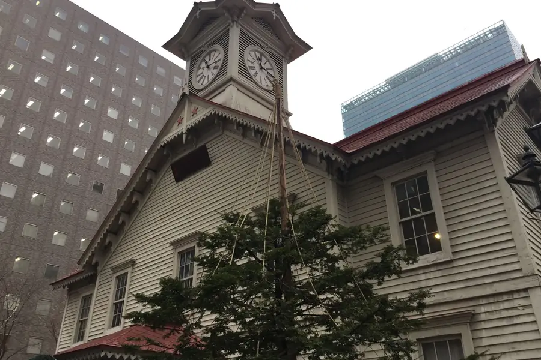
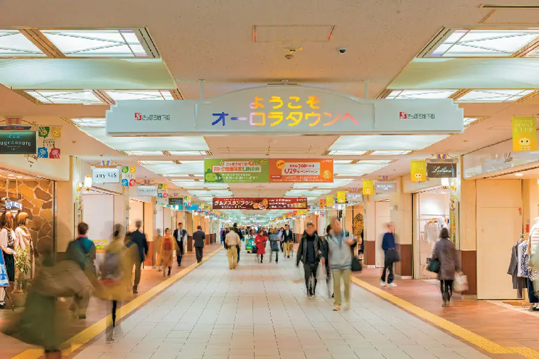
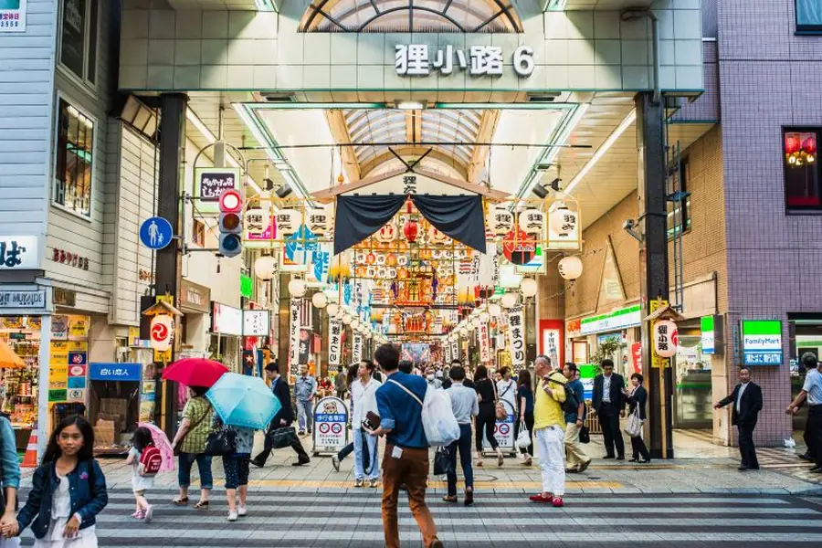

函館站搭車 1 小時
函館市區景點、海鮮、餐廳、甜點咖啡廳、神社與商店。
進入函館 →
♨️ 洞爺湖洞爺湖周邊
湖畔、溫泉、昭和新山／有珠山周邊，以及景點、餐飲與購物資料。
進入洞爺湖 →

🏙️ 札幌札幌站搭車 2 小時
札幌市區與近郊景點資料庫，含餐廳、甜點／咖啡廳、神社與商店。
進入札幌 →

🚇 札幌札幌地下街
札幌站 → 大通 → 薄野，冬天下雪也能大量走室內。
打開地下街 →

🛍️ 札幌狸小路 1～7 丁目
狸小路各丁目店家＋鄰近百貨，適合購物、美食與藥妝。
進入狸小路 →
⛄ 小樽小樽站 5km
運河、堺町通、甜點、咖啡廳、壽司與伴手禮集中查詢。
進入小樽 →